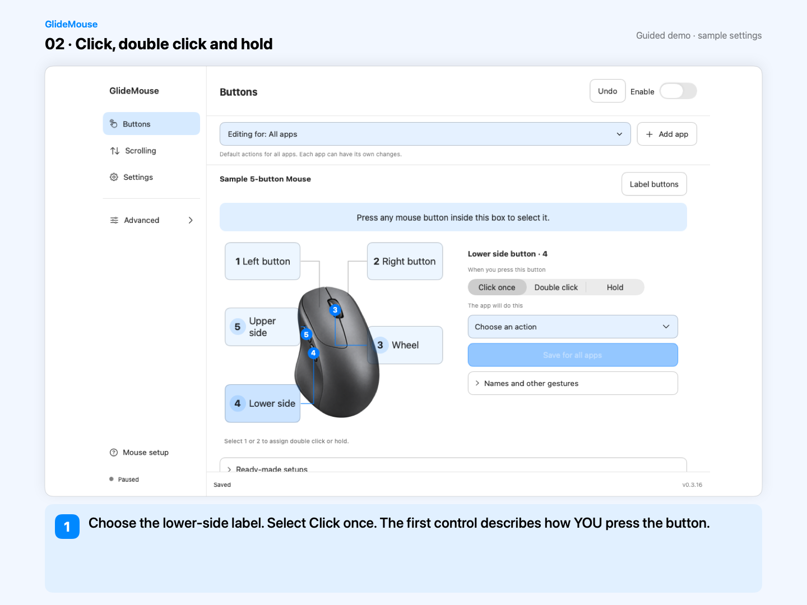

More from the mouse you already use.
Switch desktops with a side button. Hold to see your windows. Find a scrolling feel that suits you. GlideMouse makes everyday mouse controls easier to set up on your Mac.
v0.3.16 development prerelease · Signed, not notarized

A small button. A useful shortcut.
Pick a button on the mouse picture, choose how you press it, then save what it should do. Single click, double click and hold can each have their own action.
Buttons 1 and 2 support optional double-click and hold actions. Ordinary clicking and dragging remain available.
Learn button mappingTry the sample side buttons

Desktop right
One click on the upper-side button goes to the next desktop.
An example layout: numbers vary by mouse. Capture your own button in the app. This preview changes only the explanation below.

Scroll the way that feels right.
Start with Standard or Smooth. Adjust speed and direction first; open the finer controls when you need them. Continuous trackpad scrolling stays native.
- Make each wheel step shorter or longer.
- Choose a direct response or softer movement.
- Turn momentum off for a more precise stop.

One mouse. Different jobs.
All apps is your starting point. Change an action for Safari, your editor or another app when it needs something different. Everything else keeps the default.
For example: lower-side click switches desktops normally, but goes Back when Safari is in front.
Remove an app setup whenever you like. It removes its GlideMouse settings; it does not uninstall the app. Undo brings the setup back.
Three steps to make it yours.
-
Connect and allow
Connect your mouse. Allow Accessibility for your chosen actions and Input Monitoring to recognize buttons and wheel input.
-
Identify a button
Press inside the blue capture box. Confirm the detected button’s physical position on the mouse picture.
-
Choose, save, try
Choose Click once, Double click or Hold. Pick an action, save it, and test outside the capture box.
Start with one action. Add app-specific settings and advanced gestures when you need them.
A guide for every screen.
Short walkthroughs show button labels, double click and hold, app-specific settings, scrolling, shortcuts, deletion and Undo.
Read the full guide5 lessons in each language. English has local synthesized narration; Myanmar has on-screen explanations. Native app UI with sample settings, not physical-input recordings.

Your next click starts here.
Download the current developer build, put GlideMouse in Applications, and follow Mouse setup.
Release notes & checksumsBefore you get started.
Pause: ⌃⌥⌘ Esc
Will this work with my mouse?
GlideMouse works with standard reported mouse buttons and discrete wheel input. Vendor-specific buttons may not be reported normally. The universal build targets macOS 14+, but every mouse, Mac and OS version has not been physically tested. Magic Mouse touch gestures are experimental and have not been tested on real Magic Mouse hardware here.
Why does it need two permissions?
Accessibility lets GlideMouse perform actions you chose. Input Monitoring lets it recognize button and wheel input. Mouse control works locally, and the app does not keep a log of what you type. Update checks contact the configured update host.
Can I get my normal mouse back?
Yes. Pause from the menu bar or press Control + Option + Command + Escape. Remove an action or use Undo to restore a recent change. Export your settings when you want a backup.
Do I need to set up every app?
No. All apps provides the default. Only add an app when you want a different action or scrolling feel while that app is frontmost.
What about automatic updates?
The app includes Sparkle update controls. Installation needs a newer eligible signed release in the update feed. End-to-end automatic update installation has not been verified; source commits and GitHub prereleases do not automatically update the installed app.